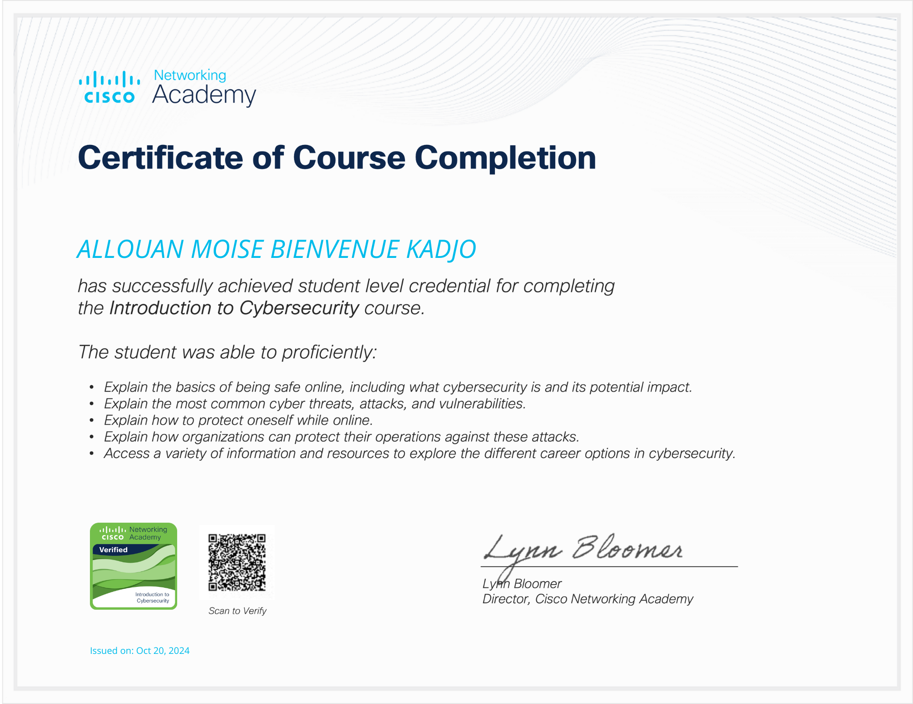
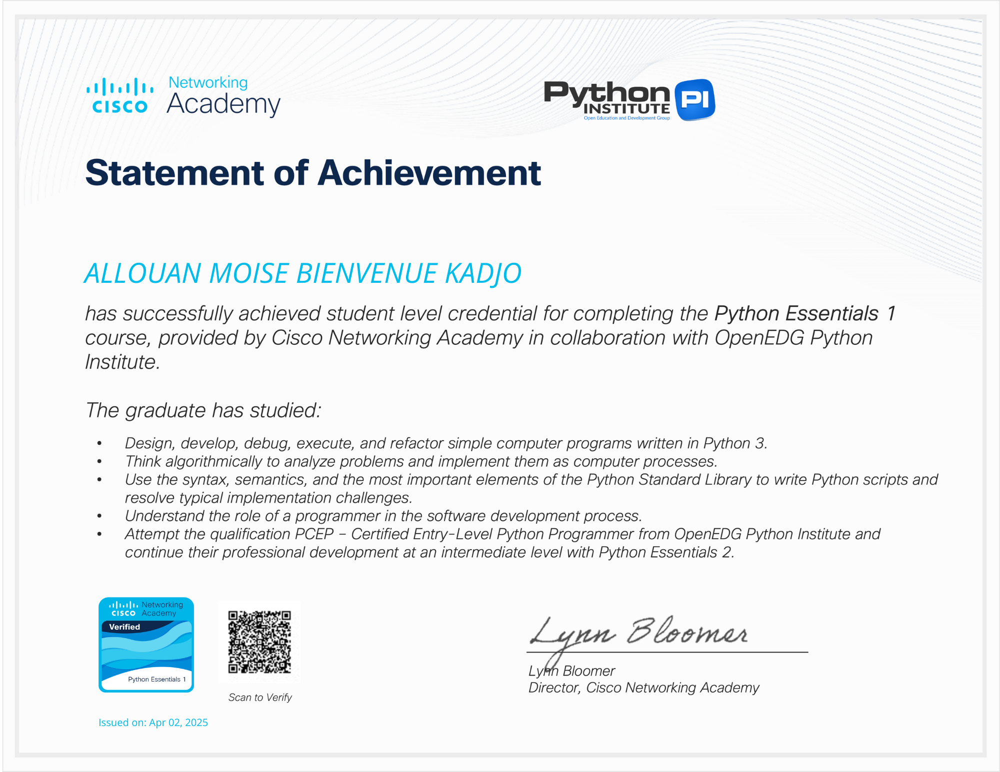
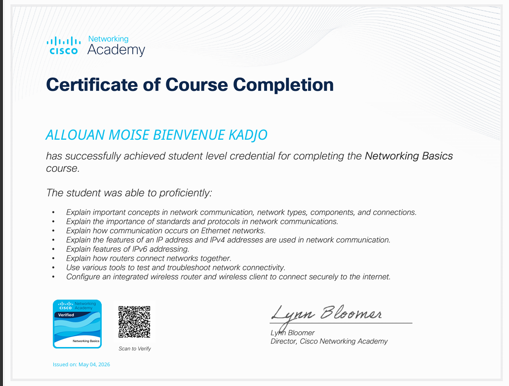

{kind=link}
Architecture Load Balancing
Déploiement de trois serveurs Web avec répartition de charge, haute disponibilité et tolérance aux pannes.
LinuxApache/NginxRéseaux

Je suis un étudiant passionné par les mathematique mais surtout l'Informatique. Actuellement en Licence 3 de Science Informatique à l'Université Félix Houphouët-Boigny, je me spécialise dans le développement web et la programmation.
Mon objectif est de devenir un expert dans le domaine de la Cybersecurite, capable de créer des solutions innovantes et performantes. J'aime apprendre de nouvelles technologies et relever des défis techniques.
Master 1 RIST — UFHB Abidjan (En cours)
Licence 3 Informatique — UFHB Abidjan (2024-2025)
Baccalauréat C — Lycée Municipal de Bonoua (2021-2022)
Abidjan, Côte d'Ivoire



Déploiement de trois serveurs Web avec répartition de charge, haute disponibilité et tolérance aux pannes.
Installation de serveurs Linux, gestion des utilisateurs, configuration des permissions et des services réseau.
Déploiement d'un environnement complet sous VirtualBox : DHCP, DNS, interconnexion de plusieurs machines et administration système.